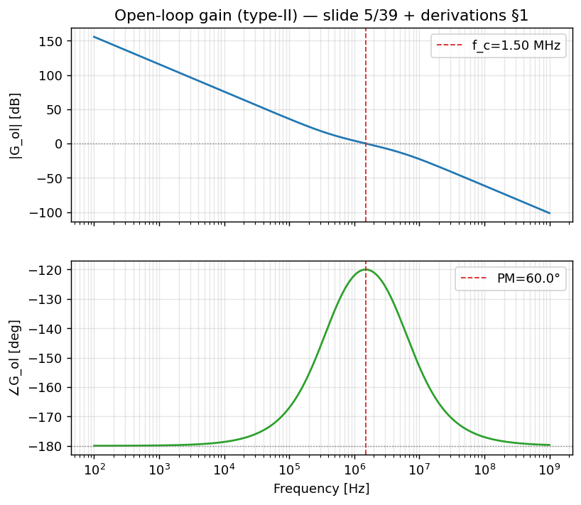
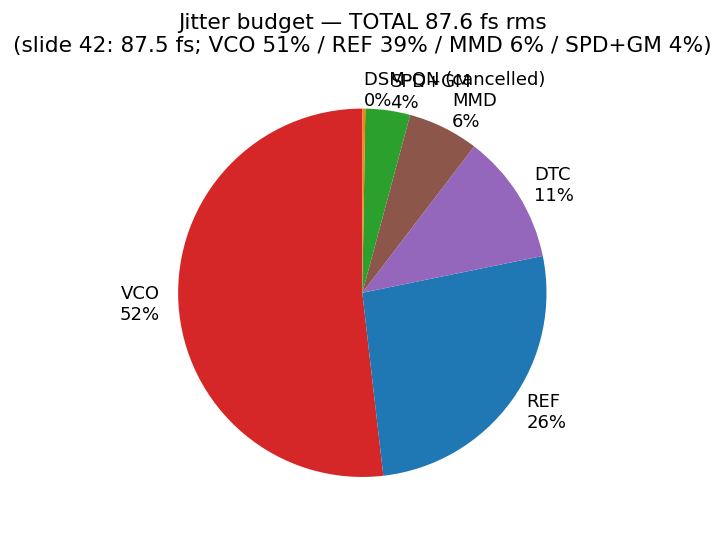
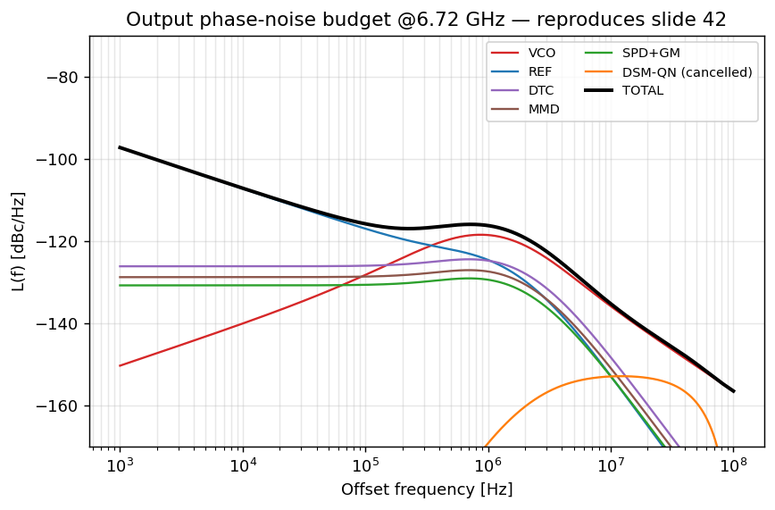
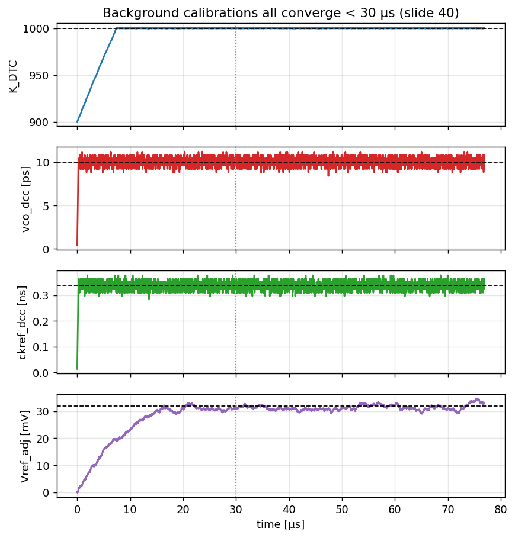
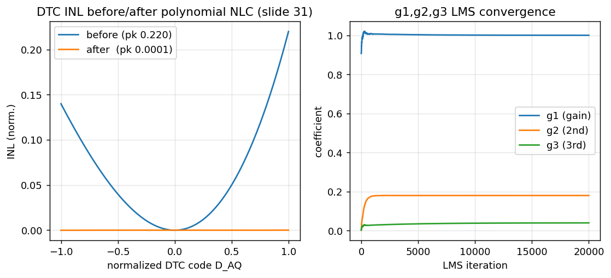
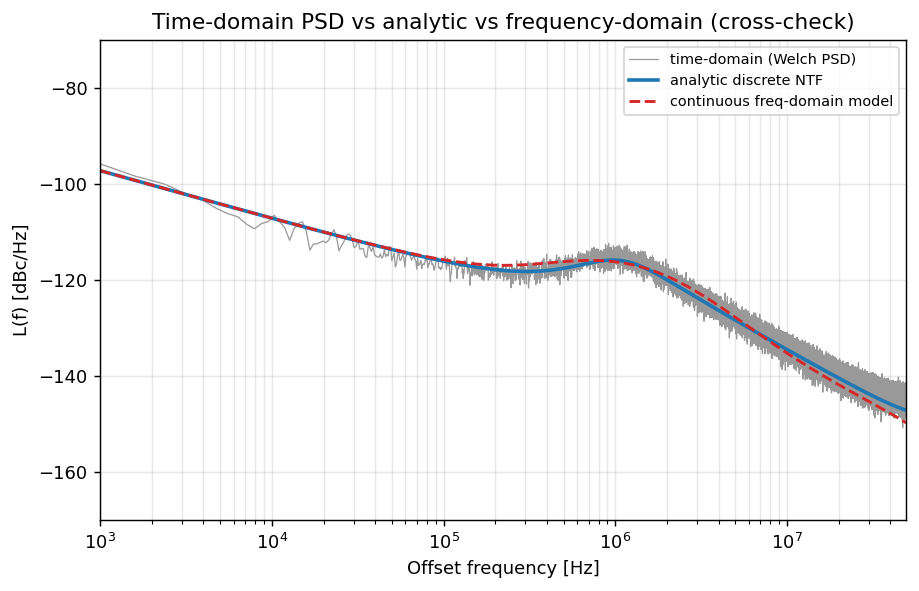

Numerical Examples
A consolidated, fully worked set of the seven number-checkable calculations behind the DTC-assisted fractional-N PLL — each shown as GIVEN → FORMULA → CALCULATION → RESULT → INTERPRETATION, with every figure traced back to the deck, the derivations, or the model JSON.
freq_domain.json.
1 — DTC quantization noise floor
GIVEN
Time resolution needs citation (target spec) $T_{res} = 400\ \text{fs}$; reference rate $f_{ref} = 104\ \text{MHz}$. The DTC quantizes the reference edge once per reference cycle, so its timing error is white over the Nyquist band.
FORMULA derived
A uniform time quantizer of step $T_{res}$ has timing variance $\sigma_t^2 = T_{res}^2/12$ textbook (Bennett quantization). Converting to reference phase via $\varphi = 2\pi f_{ref}\,\Delta t$ and spreading the variance over the full Nyquist span $f_{ref}$ gives the flat single-sided PSD:
$$\Phi_{\text{DTC,QN}} = \frac{(2\pi\,T_{res})^2}{12}\,f_{ref}\qquad[\text{rad}^2/\text{Hz}]$$CALCULATION derived
$$\frac{(2\pi\cdot 400\times10^{-15})^2}{12}\cdot 104\times10^{6} = \frac{(2.513\times10^{-12})^2}{12}\cdot 1.04\times10^{8}$$ $$= \frac{6.317\times10^{-24}}{12}\cdot 1.04\times10^{8} = 5.264\times10^{-25}\cdot 1.04\times10^{8} = 5.47\times10^{-17}$$ $$\mathcal{L}_{\text{DTC,QN}} = 10\log_{10}(5.47\times10^{-17}) = -162.6\ \text{dBc/Hz}$$RESULT
INTERPRETATION
The 0.4-dB gap (−162.6 vs −163) is rounding in the slide. The PLL freq_domain.json carries dtc_qn_dbc = -163.0 as the modeled in-band DTC quantization floor. Because $\Phi_{\text{DTC,QN}}\propto T_{res}^2$, halving the LSB drops this floor by 6 dB — the motivation for the range-reduction tricks (slides 33/34/38).
2 — DTC delay range
GIVEN
Resolution per LSB $T_{res} = 400\ \text{fs}$; DTC word width $n = 10\ \text{bits}$.
FORMULA
$$DR = 2^{n}\cdot T_{res} = 2^{n}\cdot \ln 2\cdot R\cdot C_{LSB}$$CALCULATION
$$DR = 2^{10}\cdot 400\times10^{-15} = 1024\cdot 4.0\times10^{-13} = 4.096\times10^{-10}\ \text{s}$$RESULT
INTERPRETATION
The DTC must span at least one reference-edge interval of fractional slip; ~400 ps with 10-bit resolution gives 400-fs LSBs. Since DTC power $\propto DR^2$ and DTC QN $\propto T_{res}^2$ , the design wants the smallest range that still covers the required edge motion — exactly why the ½-range (p34) and ⅛-range (p38) schemes exist.
3 — Sampling phase-detector gain $K_{SPD}$
GIVEN
Slope of the sampled waveform at the sampling instant $K_{slope} = 6\ \text{GV/s}$ needs citation (slide quotes "6 GV/s"); $f_{ref} = 104\ \text{MHz}$.
FORMULA
$$K_{SPD} = \frac{K_{slope}}{2\pi f_{ref}}\qquad[\text{V/rad}]$$Reasoning: a phase error $\varphi$ rad at the reference equals a time error $\varphi/(2\pi f_{ref})$ s, which the slope converts to a sampled voltage $K_{slope}\cdot\varphi/(2\pi f_{ref}) = K_{SPD}\,\varphi$.
CALCULATION derived
$$\frac{K_{slope}}{f_{ref}} = \frac{6\times10^{9}}{104\times10^{6}} = 57.7\qquad\Rightarrow\qquad K_{SPD} = \frac{57.7}{2\pi} = 9.18\ \text{V/rad}$$RESULT
INTERPRETATION
The large $K_{SPD}\approx 9.2$ V/rad is the whole point of the sampling PD: it provides high "phase-to-voltage" gain so that the downstream GM/comparator noise, referred to the input phase, is divided by this gain and becomes negligible (it lands at only ~3.9% of the budget — see Example 5).
4 — Loop design: zero/pole from $f_c$ and PM
GIVEN assumption [A1][A2]
Crossover (loop bandwidth) $f_c = 1.5\ \text{MHz}$ [A1], phase margin $\text{PM} = 60^\circ$ [A2] (slide 42 gives no loop numbers). From freq_domain.json: $K_{vco}=100$ MHz/V, $N=64.62$, DSM order 2.
FORMULA textbook (Gardner, max-PM placement) derived
For a Type-II loop the PM is maximized when the crossover sits at the geometric mean of zero and pole, $\omega_c = \sqrt{\omega_z\,\omega_p}$. Defining the spacing factor $k = \omega_p/\omega_z$ in terms of PM:
$$k = \tan\!\left(45^\circ + \tfrac{\text{PM}}{2}\right) = \tan(75^\circ),\qquad \omega_z = \frac{\omega_c}{k},\quad \omega_p = \omega_c\,k$$CALCULATION derived
$$k = \tan(75^\circ) = 3.732 \;\Rightarrow\; \omega_p/\omega_z = k^2 = 13.93$$ $$f_z = \frac{1.5\ \text{MHz}}{3.732} = 402\ \text{kHz},\qquad f_p = 1.5\ \text{MHz}\times 3.732 = 5.60\ \text{MHz}$$Matched against the model parameters in freq_domain.json:
| Quantity | rad/s (json) | Hz |
|---|---|---|
| $\omega_z$ | 2.5254e6 | 401.9 kHz |
| $\omega_p$ | 3.5174e7 | 5.598 MHz |
| $\sqrt{\omega_z\omega_p}/2\pi$ | — | 1.500 MHz |
RESULT
INTERPRETATION
Placing the zero a factor $k=3.732$ below crossover and the pole the same factor above puts the maximum phase bump right at $f_c$, yielding exactly 60° PM. The model's solved loop ($K_{loop}=2.38\times10^{13}$) reproduces f_c_Hz = 1.501 MHz and phase_margin_deg = 60.0 from freq_domain.json — a clean self-consistency check of the open-loop gain.

5 — Jitter budget → integrated phase noise
GIVEN model
$f_{out} = 6.72\ \text{GHz}$; total RMS jitter $\sigma_t = 87.6\ \text{fs}$ from the summed budget. Per-source contributions from freq_domain.json.
FORMULA textbook (IEEE-1139 / Leeson, small-angle) derived
$$\sigma_\varphi = 2\pi f_{out}\,\sigma_t,\qquad \text{IPN}_{\text{SSB}}(\text{dBc}) = 10\log_{10}\!\left(\tfrac{1}{2}\sigma_\varphi^2\right)$$The $\tfrac{1}{2}$ is the single-sideband-from-double-sideband conversion (it removes 3 dB versus the DSB form $10\log_{10}\sigma_\varphi^2$).
CALCULATION derived
$$\sigma_\varphi = 2\pi\cdot 6.72\times10^{9}\cdot 87.6\times10^{-15} = 3.699\times10^{-3}\ \text{rad}$$ $$\sigma_\varphi^2 = 1.368\times10^{-5}\ \text{rad}^2$$ $$\text{IPN}_{\text{SSB}} = 10\log_{10}\!\left(\tfrac{1}{2}\cdot1.368\times10^{-5}\right) = -51.65\ \text{dBc}$$(The DSB value would be $10\log_{10}(1.368\times10^{-5}) = -48.6$ dBc — the same 3-dB convention as Example 1.)
RESULT — the reproduced budget
| Source | σφ (rad) | jitter (fs) | share |
|---|---|---|---|
| VCO | 2.662e-3 | 63.06 | 51.8% |
| REF | 1.900e-3 | 44.99 | 26.4% |
| DTC | 1.249e-3 | 29.58 | 11.4% |
| MMD | 9.218e-4 | 21.83 | 6.2% |
| SPD+GM | 7.322e-4 | 17.34 | 3.9% |
| DSM-QN (cancelled) | 1.895e-4 | 4.49 | 0.3% |
| TOTAL | 3.699e-3 | 87.60 | 100% |
INTERPRETATION
The computed −51.65 dBc matches freq_domain.json's ipn_dbc_ssb = -51.65 and slide 42 (quoted −51.6 / −51.7) to within rounding. Sources add in RMS (variances sum): $\sigma_{tot}^2 = \sum_i \sigma_i^2$. The VCO dominates at ~52% because its phase noise is only high-pass-suppressed inside the loop bandwidth and passes unfiltered above $f_c$; REF + DTC together (~37.8%) are the next lever; the DSM quantization noise is nearly fully cancelled by the DTC (0.3%), which is the central claim of the architecture.


6 — Calibration convergence
GIVEN — all four loops must settle in < 30 µs
Initial $K_{DTC}$ error assumption [see docs/assumptions.md] = 10% of a 1000-code nominal → 100 codes of error. Each loop uses a sign-sign-LMS update textbook (Widrow & Stearns):
$$w[k+1] = w[k] + \mu\cdot\operatorname{sign}(e[k])\cdot\operatorname{sign}(x[k])$$FORMULA / MECHANISM derived
For the DTC-gain loop, $E\{e\cdot\Phi_e\}\propto(g-\hat g)E\{\Phi_e^2\}$, giving a first-order recursion with time constant $\tau\approx 1/(\mu\,E\{\Phi_e^2\}\,2f_{ref}\,\eta)$, so the gain estimate decays exponentially to truth. The duty-cycle loops correlate $e[k]$ against a deterministic $\pm1$ regressor ($\texttt{SEL\_CKFB}$ for VCO duty, $\texttt{even\_cycle}$ for CKREF) to isolate the alternating error from random noise.
RESULT — from calibrations.json
| Loop | settle (µs) | target | final |
|---|---|---|---|
| $K_{DTC}$ gain | 6.68 | — | 0.0001% err |
| VCO duty (vco_dcc) | 1.00 | 10 ps | 9.6 ps |
| CKREF duty (ckref_dcc) | 0.98 | 0.337 ns | 0.350 ns |
| Comparator offset | 14.63 | 32 mV | 33.12 mV |
VCO duty-cycle worked point derived
For a duty error of 20 ps, the correction drives $\texttt{vco\_dcc}\to\Delta t_{err}/2 = 10$ ps (push/pull $\pm\Delta t_{err}/2$ on alternate feedback edges). The model converges to 9.6 ps against the 10-ps target in ~1 µs — confirming the half-step law.
INTERPRETATION
The slowest loop (offset, 14.6 µs) still finishes inside the 30-µs budget, so the staggered cal scheme of slide 40 closes. Note the residual offset_bias_pct = 22.6% on the raw DTC-gain loop is exactly the bias term $\mu\,m\,E\{\Phi_e\}$ that the $\Delta V$-DAC offset cal (slide 28) is there to remove.

Bonus — polynomial nonlinearity correction (NLC)
Three parallel LMS loops adapt $g_1,g_2,g_3$ in $D_{DCW}=g_1 D_{AQ}+g_2 D_{AQ}^2+g_3 D_{AQ}^3$. From calibrations.json, peak integral nonlinearity falls from 0.220 LSB to 1.1e-4 LSB (effectively zero) after convergence.

7 — Time-domain ↔ frequency-domain cross-check
GIVEN derived
Two independent models compute the same RMS jitter over the same band 1 kHz – 49.4 MHz ($\approx 0.95\cdot f_{ref}/2$, i.e. a 5% guard below the 52 MHz Nyquist edge, from time_domain.json):
- Time-domain Monte-Carlo of the phase-error sequence → std of $\varphi[k]$.
- Frequency-domain integral of the Welch PSD → $\sigma_t=\sqrt{\int S_\varphi\,df}/(2\pi f_{out})$.
FORMULA textbook (Welch 1967 / Parseval)
$$S_\varphi(f) = \frac{2}{f_s M U}\,\big|\text{FFT}(w\cdot\varphi)\big|^2,\qquad \int S_\varphi\,df \approx \operatorname{var}(\varphi)$$RESULT — from time_domain.json
| Check | value |
|---|---|
| Jitter (time-domain std) | 88.22 fs |
| Jitter (PSD integral, same band) | 87.44 fs |
| Difference | +0.039 dB |
| Parseval: var(φ) time | 1.498e-5 rad² |
| Parseval: var(φ) PSD | 1.428e-5 rad² |
INTERPRETATION
The two estimators agree to < 0.05 dB and the Parseval variances match to ~5%, validating both the PSD normalization and the NTF construction. The ~0.8-fs offset between the two is the finite-FFT / windowing residual, well inside the ≤ 0.5-dB sanity threshold set in derivations §9. The slightly higher time-domain figure (88.2 vs the freq-domain budget's 87.6 fs in Example 5) reflects the different integration band edge (49.4 MHz $\approx 0.95\cdot f_{ref}/2$ here, vs 100 MHz in the budget) and Monte-Carlo variance.

8 — Fraction → bits: the FCW and channel resolution
How fine a frequency grid can a fractional-N loop hit, and how many accumulator bits does that take? The fraction \(\alpha\) is stored in an \(L\)-bit accumulator as \(\text{FCW}=\operatorname{round}(\alpha\,2^{L})\); the output frequency step is one accumulator LSB, \(\Delta f=f_{\rm ref}/2^{L}\).
Given: \(f_{\rm ref}=104\) MHz, \(\alpha=0.6154\) (so \(N=64.6154\)). Resolution and word value vs bit-width:
| \(L\) (bits) | FCW = round(α·2^L) | \(\Delta f = f_{\rm ref}/2^{L}\) | output freq error (actual − target) |
|---|---|---|---|
| 20 | 645,278 | 99.2 Hz | +45.8 Hz |
| 24 | 10,324,441 | 6.20 Hz | +2.4 Hz |
| 27 | 82,595,525 | 0.77 Hz | +0.06 Hz |
Sizing rule: to guarantee a raster finer than \(\Delta f_{\rm spec}\) you need \(L \ge \lceil\log_2(f_{\rm ref}/\Delta f_{\rm spec})\rceil\). (All three errors are positive because \(\operatorname{round}\) here happens to round the FCW up, so the realized frequency sits just above target.) For a 1 Hz grid: \(L=\lceil\log_2(104\times10^{6})\rceil = 27\) bits (giving 0.77 Hz). The deck does not specify \(L\); these use [A23]. derived assumption [A23]
9 — Capstone: one fraction, all the way to a DTC code
String the whole digital chain together for the design's own channel, \(N=64.6154\) — fraction → bits → accumulator residue → delay → DTC code → residual.
① Fraction → FCW (\(L=24\), [A23]): \(\text{FCW}=\operatorname{round}(0.6153846\cdot2^{24})=10{,}324{,}441\).
② Accumulator → residue. The accumulator's leftover each cycle is \(\Phi_{\rm QE}[n]=\text{acc}[n]/2^{24}\) (in \(T_{\rm vco}\)); take a representative residue \(\Phi_{\rm QE}=0.6154\,T_{\rm vco}\).
③ Residue → delay. The DTC must delay the reference by \(\Delta t=\Phi_{\rm QE}\,T_{\rm vco}=0.6154\times148.8\ \text{ps}=91.6\) ps.
④ Delay → DTC code, with \(K_{\rm DTC}=T_{\rm vco}/T_{\rm res}=148.8\ \text{ps}/400\ \text{fs}=372\) codes per \(T_{\rm vco}\):
$$ \text{code}=\operatorname{round}(K_{\rm DTC}\cdot\Phi_{\rm QE})=\operatorname{round}(372\times0.6154)=\operatorname{round}(228.93)=\mathbf{229}\ \text{codes}. $$⑤ Code → residual. The 0.07-code rounding leaves \(\delta t=(228.93-229)\times400\ \text{fs}=-28\) fs of uncancelled error per cycle — the DTC quantization that sets the \(-163\) dBc/Hz floor ; any DTC nonlinearity on top turns this periodic residue into the fractional spurs of the Spurs page. derived
freq_domain.json, calibrations.json, time_domain.json, and docs/derivations.md (§3 DTC QN, §6 $K_{SPD}$, §7 cal, §8 jitter conversions, §9 cross-check). Standard theory named inline: Bennett quantization, Gardner/Razavi loop design, Widrow & Stearns LMS, Welch PSD, IEEE-1139/Leeson phase-noise conventions.
Self-check
Show answer
freq_domain.json / is just slide rounding. Because $\Phi_{\text{DTC,QN}}\propto T_{res}^2$, halving the LSB lowers this floor by 6 dB.Show answer
Show answer
freq_domain.json and .